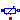
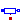
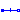
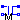
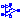
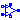
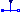
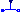

Basic electrical components
This package contains very basic analog electrical components such as resistor, conductor, condensator, inductor, and the ground (which is needed in each electrical circuit description. Furthermore, controlled sources, coupling components, and some improved (but nevertheless basic) are in this package.
Extends from Modelica.Icons.Package (Icon for standard packages).
| Name | Description |
|---|---|
| Ground node | |
| Ideal linear electrical resistor | |
|  HeatingResistor | Temperature dependent electrical resistor |
|  Conductor | Ideal linear electrical conductor |
|  Capacitor | Ideal linear electrical capacitor |
| Inductor | Ideal linear electrical inductor |
| Simple model of an inductor with saturation | |
|  Transformer | Transformer with two ports |
| M_Transformer | Generic transformer with free number of inductors |
| Gyrator | Gyrator |
| Electromotoric force (electric/mechanic transformer) | |
| Electromotoric force (electric/mechanic transformer) | |
| VCV | Linear voltage-controlled voltage source |
| VCC | Linear voltage-controlled current source |
| CCV | Linear current-controlled voltage source |
| CCC | Linear current-controlled current source |
|  OpAmp | Simple nonideal model of an OpAmp with limitation |
|  OpAmpDetailed | Detailed model of an operational amplifier |
| Ideal linear electrical resistor with variable resistance | |
| Ideal linear electrical conductor with variable conductance | |
|  VariableCapacitor | Ideal linear electrical capacitor with variable capacitance |
|  VariableInductor | Ideal linear electrical inductor with variable inductance |
Ground node
Ground of an electrical circuit. The potential at the ground node is zero. Every electrical circuit has to contain at least one ground object.
| Name | Description |
|---|---|
| p |
 Modelica.Electrical.Analog.Basic.Resistor
Modelica.Electrical.Analog.Basic.ResistorIdeal linear electrical resistor
The linear resistor connects the branch voltage v with the branch current i by i*R = v. The Resistance R is allowed to be positive, zero, or negative.
Extends from Modelica.Electrical.Analog.Interfaces.OnePort (Component with two electrical pins p and n and current i from p to n), Modelica.Electrical.Analog.Interfaces.ConditionalHeatPort (Partial model to include a conditional HeatPort in order to describe the power loss via a thermal network).
| Name | Description |
|---|---|
| R | Resistance at temperature T_ref [Ohm] |
| T_ref | Reference temperature [K] |
| alpha | Temperature coefficient of resistance (R_actual = R*(1 + alpha*(T_heatPort - T_ref)) [1/K] |
| useHeatPort | =true, if HeatPort is enabled |
| T | Fixed device temperature if useHeatPort = false [K] |
| Name | Description |
|---|---|
| p | Positive pin (potential p.v > n.v for positive voltage drop v) |
| n | Negative pin |
| heatPort |
Temperature dependent electrical resistor
This is a model for an electrical resistor where the generated heat is dissipated to the environment via connector heatPort and where the resistance R is temperature dependent according to the following equation:
R = R_ref*(1 + alpha*(heatPort.T - T_ref))
alpha is the temperature coefficient of resistance, which is often abbreviated as TCR. In resistor catalogues, it is usually defined as X [ppm/K] (parts per million, similarly to percentage) meaning X*1.e-6 [1/K]. Resistors are available for 1 .. 7000 ppm/K, i.e., alpha = 1e-6 .. 7e-3 1/K;
Via parameter useHeatPort the heatPort connector can be enabled and disabled (default = enabled). If it is disabled, the generated heat is transported implicitly to an internal temperature source with a fixed temperature of T_ref.
If the heatPort connector is enabled, it must be connected.
Extends from Modelica.Electrical.Analog.Interfaces.OnePort (Component with two electrical pins p and n and current i from p to n), Modelica.Electrical.Analog.Interfaces.ConditionalHeatPort (Partial model to include a conditional HeatPort in order to describe the power loss via a thermal network).
| Name | Description |
|---|---|
| R_ref | Resistance at temperature T_ref [Ohm] |
| T_ref | Reference temperature [K] |
| alpha | Temperature coefficient of resistance (R = R_ref*(1 + alpha*(heatPort.T - T_ref)) [1/K] |
| useHeatPort | =true, if HeatPort is enabled |
| T | Fixed device temperature if useHeatPort = false [K] |
| Name | Description |
|---|---|
| p | Positive pin (potential p.v > n.v for positive voltage drop v) |
| n | Negative pin |
| heatPort |
Ideal linear electrical conductor
The linear conductor connects the branch voltage v with the branch current i by i = v*G. The Conductance G is allowed to be positive, zero, or negative.
Extends from Modelica.Electrical.Analog.Interfaces.OnePort (Component with two electrical pins p and n and current i from p to n), Modelica.Electrical.Analog.Interfaces.ConditionalHeatPort (Partial model to include a conditional HeatPort in order to describe the power loss via a thermal network).
| Name | Description |
|---|---|
| G | Conductance at temperature T_ref [S] |
| T_ref | Reference temperature [K] |
| alpha | Temperature coefficient of conductance (G_actual = G_ref/(1 + alpha*(T_heatPort - T_ref)) [1/K] |
| useHeatPort | =true, if HeatPort is enabled |
| T | Fixed device temperature if useHeatPort = false [K] |
| Name | Description |
|---|---|
| p | Positive pin (potential p.v > n.v for positive voltage drop v) |
| n | Negative pin |
| heatPort |
Ideal linear electrical capacitor
The linear capacitor connects the branch voltage v with the branch current i by i = C * dv/dt. The Capacitance C is allowed to be positive or zero.
Extends from Interfaces.OnePort (Component with two electrical pins p and n and current i from p to n).
| Name | Description |
|---|---|
| C | Capacitance [F] |
| Name | Description |
|---|---|
| p | Positive pin (potential p.v > n.v for positive voltage drop v) |
| n | Negative pin |
Ideal linear electrical inductor
The linear inductor connects the branch voltage v with the branch current i by v = L * di/dt. The Inductance L is allowed to be positive, or zero.
Extends from Interfaces.OnePort (Component with two electrical pins p and n and current i from p to n).
| Name | Description |
|---|---|
| L | Inductance [H] |
| Name | Description |
|---|---|
| p | Positive pin (potential p.v > n.v for positive voltage drop v) |
| n | Negative pin |
Simple model of an inductor with saturation
This model approximates the behaviour of an inductor with the influence of saturation, i.e., the value of the inductance depends on the current flowing through the inductor. The inductance decreases as current increases.
The parameters are:
Extends from Modelica.Electrical.Analog.Interfaces.OnePort (Component with two electrical pins p and n and current i from p to n).
| Name | Description |
|---|---|
| Inom | Nominal current [A] |
| Lnom | Nominal inductance at Nominal current [H] |
| Lzer | Inductance near current=0 [H] |
| Linf | Inductance at large currents [H] |
| Name | Description |
|---|---|
| p | Positive pin (potential p.v > n.v for positive voltage drop v) |
| n | Negative pin |
 Modelica.Electrical.Analog.Basic.Transformer
Modelica.Electrical.Analog.Basic.TransformerTransformer with two ports
The transformer is a two port. The left port voltage v1, left port current i1, right port voltage v2 and right port current i2 are connected by the following relation:
| v1 | | L1 M | | i1'; |
| | = | | | |
| v2 | | M L2 | | i2'; |
L1, L2, and M are the primary, secondary, and coupling inductances respectively.
Extends from Interfaces.TwoPort (Component with two electrical ports, including current).
| Name | Description |
|---|---|
| L1 | Primary inductance [H] |
| L2 | Secondary inductance [H] |
| M | Coupling inductance [H] |
| Name | Description |
|---|---|
| p1 | Positive pin of the left port (potential p1.v > n1.v for positive voltage drop v1) |
| n1 | Negative pin of the left port |
| p2 | Positive pin of the right port (potential p2.v > n2.v for positive voltage drop v2) |
| n2 | Negative pin of the right port |
Generic transformer with free number of inductors
The model M_Transformer is a model of a transformer with the possibility to choose the number of inductors. Inside the model, an inductance matrix is built based on the inductance of the inductors and the coupling inductances between the inductors given as a parameter vector from the user of the model.
An example shows that approach:
The user chooses a model with three inductors, that means the parameter N has to be 3. Then he has to specify the inductances of the three inductors and the three coupling inductances. The coupling inductances are no real existing devices, but effects that occur between two inductors. The inductivities (main diagonal of the inductance matrix) and the coupling inductivities have to be specified in the parameter vector L. The length dimL of the parameter vector is calculated as follows: dimL=(N*(N+1))/2
The following example shows how the parameter vector is used to fill in the inductance matrix. To specify the inductance matrix of a three inductances transformer (N=3):

the user has to allocate the parameter vector L[6] , since Nv=(N*(N+1))/2=(3*(3+1))/2=6. The parameter vector must be filled like this: L=[1,0.1,0.2,2,0.3,3] .
Inside the model, two loops are used to fill the inductance matrix to guarantee that it is filled in a symmetric way.
| Name | Description |
|---|---|
| N | Number of inductors |
| L[dimL] | Inductances and coupling inductances [H] |
| Lm[N, N] | Complete symmetric inductance matrix, calculated internally [H] |
| Name | Description |
|---|---|
| p[N] | Positive pin |
| n[N] | Negative pin |
Gyrator
A gyrator is a two-port element defined by the following equations:
i1 = G2 * v2
i2 = -G1 * v1
where the constants G1, G2 are called the gyration conductance.
Extends from Interfaces.TwoPort (Component with two electrical ports, including current).
| Name | Description |
|---|---|
| G1 | Gyration conductance [S] |
| G2 | Gyration conductance [S] |
| Name | Description |
|---|---|
| p1 | Positive pin of the left port (potential p1.v > n1.v for positive voltage drop v1) |
| n1 | Negative pin of the left port |
| p2 | Positive pin of the right port (potential p2.v > n2.v for positive voltage drop v2) |
| n2 | Negative pin of the right port |
Electromotoric force (electric/mechanic transformer)
EMF transforms electrical energy into rotational mechanical energy. It is used as basic building block of an electrical motor. The mechanical connector flange can be connected to elements of the Modelica.Mechanics.Rotational library. flange.tau is the cut-torque, flange.phi is the angle at the rotational connection.
| Name | Description |
|---|---|
| useSupport | = true, if support flange enabled, otherwise implicitly grounded |
| k | Transformation coefficient [N.m/A] |
| Name | Description |
|---|---|
| p | |
| n | |
| flange | |
| support | Support/housing of emf shaft |
Electromotoric force (electric/mechanic transformer)
EMF transforms electrical energy into translational mechanical energy. It is used as basic building block of an electrical linear motor. The mechanical connector flange can be connected to elements of the Modelica.Mechanics.Translational library. flange.f is the cut-force, flange.s is the distance at the translational connection.
| Name | Description |
|---|---|
| useSupport | = true, if support flange enabled, otherwise implicitly grounded |
| k | Transformation coefficient [N/A] |
| Name | Description |
|---|---|
| p | |
| n | |
| flange | |
| support | Support/housing |
Linear voltage-controlled voltage source
The linear voltage-controlled voltage source is a TwoPort. The right port voltage v2 is controlled by the left port voltage v1 via
v2 = v1 * gain.
The left port current is zero. Any voltage gain can be chosen.
Extends from Interfaces.TwoPort (Component with two electrical ports, including current).
| Name | Description |
|---|---|
| gain | Voltage gain |
| Name | Description |
|---|---|
| p1 | Positive pin of the left port (potential p1.v > n1.v for positive voltage drop v1) |
| n1 | Negative pin of the left port |
| p2 | Positive pin of the right port (potential p2.v > n2.v for positive voltage drop v2) |
| n2 | Negative pin of the right port |
Linear voltage-controlled current source
The linear voltage-controlled current source is a TwoPort. The right port current i2 is controlled by the left port voltage v1 via
i2 = v1 * transConductance.
The left port current is zero. Any transConductance can be chosen.
Extends from Interfaces.TwoPort (Component with two electrical ports, including current).
| Name | Description |
|---|---|
| transConductance | Transconductance [S] |
| Name | Description |
|---|---|
| p1 | Positive pin of the left port (potential p1.v > n1.v for positive voltage drop v1) |
| n1 | Negative pin of the left port |
| p2 | Positive pin of the right port (potential p2.v > n2.v for positive voltage drop v2) |
| n2 | Negative pin of the right port |
Linear current-controlled voltage source
The linear current-controlled voltage source is a TwoPort. The right port voltage v2 is controlled by the left port current i1 via
v2 = i1 * transResistance.
The left port voltage is zero. Any transResistance can be chosen.
Extends from Interfaces.TwoPort (Component with two electrical ports, including current).
| Name | Description |
|---|---|
| transResistance | Transresistance [Ohm] |
| Name | Description |
|---|---|
| p1 | Positive pin of the left port (potential p1.v > n1.v for positive voltage drop v1) |
| n1 | Negative pin of the left port |
| p2 | Positive pin of the right port (potential p2.v > n2.v for positive voltage drop v2) |
| n2 | Negative pin of the right port |
Linear current-controlled current source
The linear current-controlled current source is a TwoPort. The right port current i2 is controlled by the left port current i1 via
i2 = i1 * gain.
The left port voltage is zero. Any current gain can be chosen.
Extends from Interfaces.TwoPort (Component with two electrical ports, including current).
| Name | Description |
|---|---|
| gain | Current gain |
| Name | Description |
|---|---|
| p1 | Positive pin of the left port (potential p1.v > n1.v for positive voltage drop v1) |
| n1 | Negative pin of the left port |
| p2 | Positive pin of the right port (potential p2.v > n2.v for positive voltage drop v2) |
| n2 | Negative pin of the right port |
Simple nonideal model of an OpAmp with limitation
The OpAmp is a simple nonideal model with a smooth out.v = f(vin) characteristic, where "vin = in_p.v - in_n.v". The characteristic is limited by VMax.v and VMin.v. Its slope at vin=0 is the parameter Slope, which must be positive. (Therefore, the absolute value of Slope is taken into calculation.)
| Name | Description |
|---|---|
| Slope | Slope of the out.v/vin characteristic at vin=0 |
| Name | Description |
|---|---|
| in_p | Positive pin of the input port |
| in_n | Negative pin of the input port |
| out | Output pin |
| VMax | Positive output voltage limitation |
| VMin | Negative output voltage limitation |
Detailed model of an operational amplifier
The OpAmpDetailed model is a general operational amplifier model. The emphasis is on separating each important data sheet parameter into a sub-circuit independent of the other parameters. The model is broken down into five functional stages input, frequency response, gain, slew rate and an output stage. Each stage contains data sheet parameters to be modeled. This partitioning and the modelling of the separate submodels are based on the description in [CP92].
Using [CP92] Joachim Haase (Fraunhofer Institute for Integrated Circuits, Design Automation Division) transferred 2001 operational amplifier models into VHDL-AMS. Now one of these models, the model "amp(macro)" was transferred into Modelica.
| Name | Description |
|---|---|
| Rdm | Input resistance (differential input mode) [Ohm] |
| Rcm | Input resistance (common mode) [Ohm] |
| Cin | Input capacitance [F] |
| Vos | Input offset voltage [V] |
| Ib | Input bias current [A] |
| Ios | Input offset current [A] |
| vcp | Correction value for limiting by p_supply [V] |
| vcm | Correction value for limiting by msupply [V] |
| Avd0 | Differential amplifier [dB] |
| CMRR | Common-mode rejection [dB] |
| fp1 | Dominant pole [Hz] |
| fp2 | Pole frequency [Hz] |
| fp3 | Pole frequency [Hz] |
| fp4 | Pole frequency [Hz] |
| fz | Zero frequency [Hz] |
| sr_p | Slew rate for increase [V/s] |
| sr_m | Slew rate for decrease [V/s] |
| Rout | Output resistance [Ohm] |
| Imaxso | Maximal output current (source current) [A] |
| Imaxsi | Maximal output current (sink current) [A] |
| Ts | sampling time [s] |
| Name | Description |
|---|---|
| p | Positive pin of the input port |
| m | Negative pin of the input port |
| outp | Output pin |
| p_supply | Positive output voltage limitation |
| m_supply | Negative output voltage limitation |
Ideal linear electrical resistor with variable resistance
The linear resistor connects the branch voltage v with the branch current i by
i*R = v
The Resistance R is given as input signal.
Attention!!!
It is recommended that the R signal should not cross the zero value. Otherwise depending on the surrounding circuit the probability of singularities is high.
Extends from Modelica.Electrical.Analog.Interfaces.OnePort (Component with two electrical pins p and n and current i from p to n), Modelica.Electrical.Analog.Interfaces.ConditionalHeatPort (Partial model to include a conditional HeatPort in order to describe the power loss via a thermal network).
| Name | Description |
|---|---|
| T_ref | Reference temperature [K] |
| alpha | Temperature coefficient of resistance (R_actual = R*(1 + alpha*(T_heatPort - T_ref)) [1/K] |
| useHeatPort | =true, if HeatPort is enabled |
| T | Fixed device temperature if useHeatPort = false [K] |
| Name | Description |
|---|---|
| p | Positive pin (potential p.v > n.v for positive voltage drop v) |
| n | Negative pin |
| heatPort | |
| R | [Ohm] |
Ideal linear electrical conductor with variable conductance
The linear conductor connects the branch voltage v with the branch current i by
i = G*v
The Conductance G is given as input signal.
Attention!!!
It is recommended that the G signal should not cross the zero value. Otherwise depending on the surrounding circuit the probability of singularities is high.
Extends from Modelica.Electrical.Analog.Interfaces.OnePort (Component with two electrical pins p and n and current i from p to n), Modelica.Electrical.Analog.Interfaces.ConditionalHeatPort (Partial model to include a conditional HeatPort in order to describe the power loss via a thermal network).
| Name | Description |
|---|---|
| T_ref | Reference temperature [K] |
| alpha | Temperature coefficient of conductance (G_actual = G/(1 + alpha*(T_heatPort - T_ref)) [1/K] |
| useHeatPort | =true, if HeatPort is enabled |
| T | Fixed device temperature if useHeatPort = false [K] |
| Name | Description |
|---|---|
| p | Positive pin (potential p.v > n.v for positive voltage drop v) |
| n | Negative pin |
| heatPort | |
| G | [S] |
Ideal linear electrical capacitor with variable capacitance
The linear capacitor connects the branch voltage v with the branch current i by
i = dQ/dt with Q = C * v.
The capacitance C is given as input signal.
It is required that C ≥ 0, otherwise an assertion is raised. To avoid a variable index system,
C = Cmin, if 0 ≤ C < Cmin, where Cmin is a parameter with default value Modelica.Constants.eps.
Besides the Cmin parameter the capacitor model has got the two parameters IC and UIC that belong together. With the IC parameter the user can specify an initial value of the voltage over the capacitor, which is defined from positive pin p to negative pin n (v=p.v - n.v).
Hence the capacitor is charged at the beginning of the simulation. The other parameter UIC is of type Boolean. If UIC is true, the simulation tool uses
the IC value at the initial calculation by adding the equation v= IC. If UIC is false, the IC value can be used (but it does not need to!) to calculate the initial values in order to simplify the numerical algorithms of initial calculation.
Extends from Modelica.Electrical.Analog.Interfaces.OnePort (Component with two electrical pins p and n and current i from p to n).
| Name | Description |
|---|---|
| Cmin | lower bound for variable capacitance [F] |
| IC | Initial Value [V] |
| UIC |
| Name | Description |
|---|---|
| p | Positive pin (potential p.v > n.v for positive voltage drop v) |
| n | Negative pin |
| C | [F] |
Ideal linear electrical inductor with variable inductance
The linear inductor connects the branch voltage v with the branch current i by
v = d Psi/dt with Psi = L * i .
The inductance L is as input signal.
It is required that L ≥ 0, otherwise an assertion is raised. To avoid a variable index system, L = Lmin, if 0 ≤ L < Lmin, where Lmin is a parameter with default value Modelica.Constants.eps.
Besides the Lmin parameter the inductor model has got the two parameters IC and UIC that belong together. With the IC parameter the user can specify an initial value of the current that flows through the inductor.
Hence the inductor has an initial current at the beginning of the simulation. The other parameter UIC is of type Boolean. If UIC is true, the simulation tool uses
the IC value at the initial calculation by adding the equation i= IC. If UIC is false, the IC value can be used (but it does not need to!) to calculate the initial values in order to simplify the numerical algorithms of initial calculation.
Extends from Modelica.Electrical.Analog.Interfaces.OnePort (Component with two electrical pins p and n and current i from p to n).
| Name | Description |
|---|---|
| Lmin | lower bound for variable inductance [H] |
| IC | Initial Value [A] |
| UIC |
| Name | Description |
|---|---|
| p | Positive pin (potential p.v > n.v for positive voltage drop v) |
| n | Negative pin |
| L | [H] |